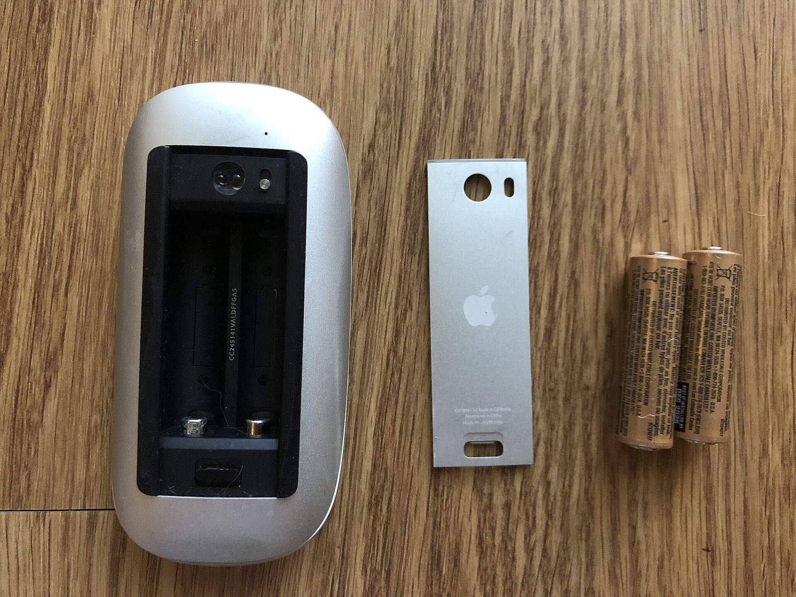
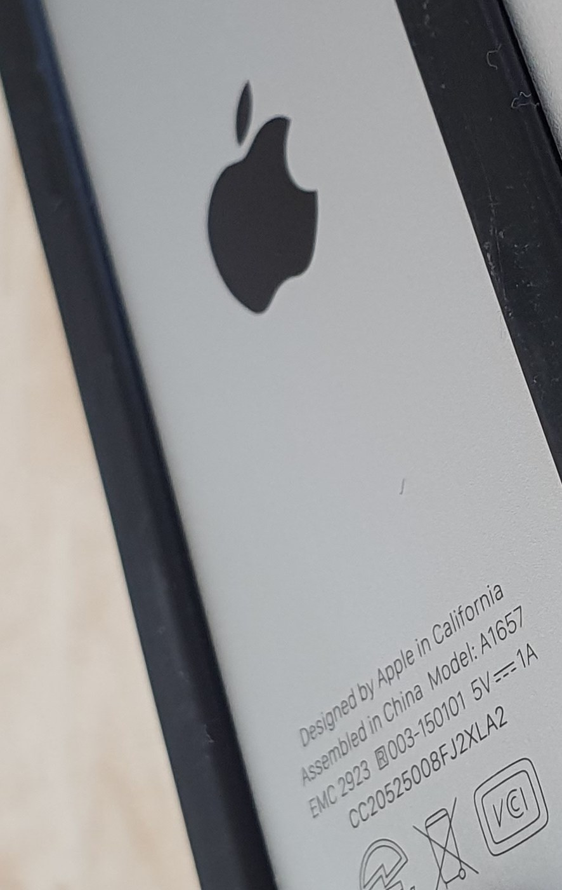
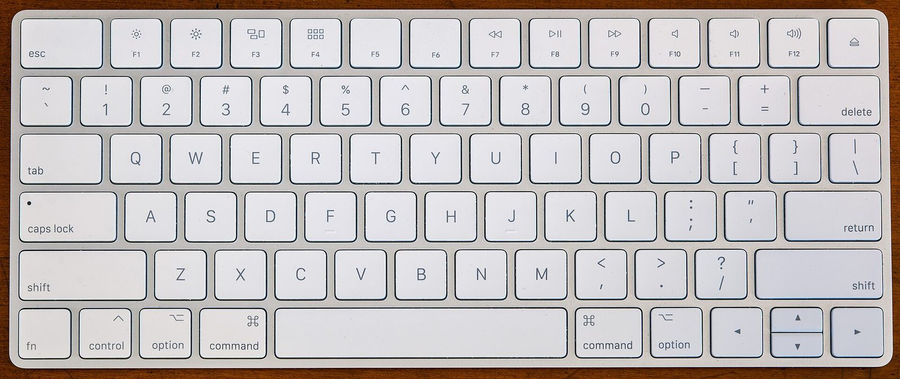
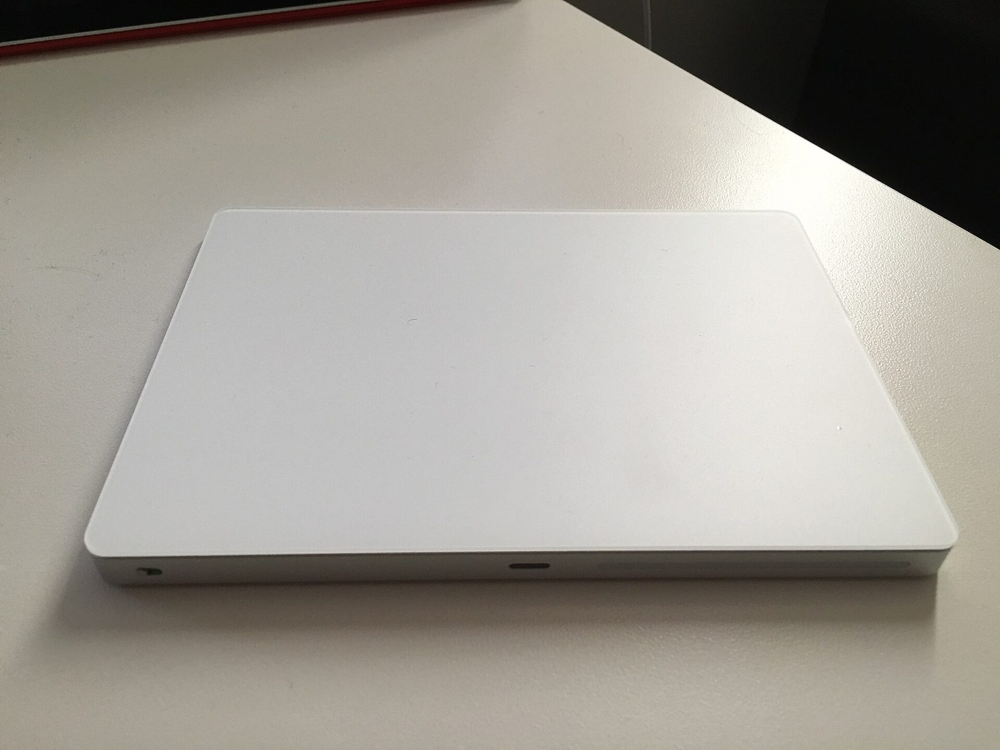
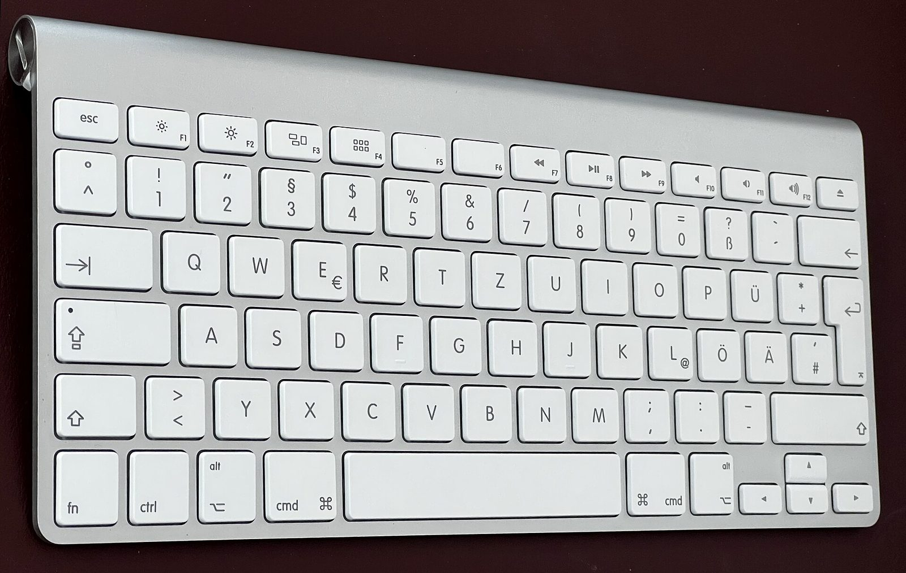
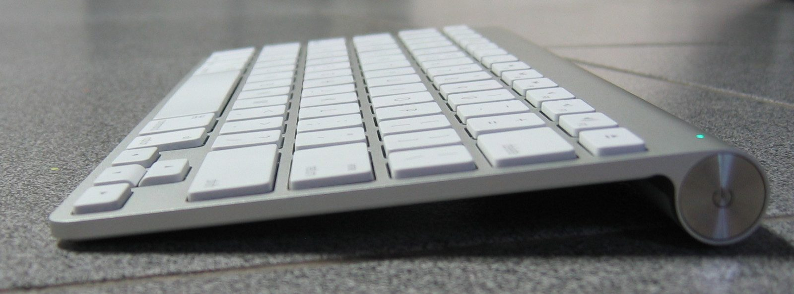
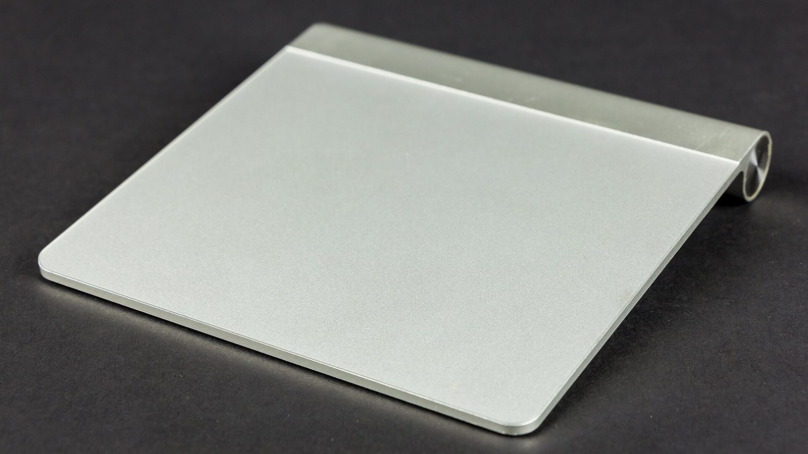

Magic Tray · catalog
Why your Magic Mouse, keyboard and trackpad each need a different Windows fix
- Windows 10 and Windows 11 treat a mouse, a keyboard and a trackpad as three separate products.
- Two Magic Mice can be different products too. Apple has sold three, and they charge in three different ways.
- Three separate jobs, so keep them apart: battery percent in the tray works for mice, keyboards and trackpads. The scrolling Windows driver is for Magic Mouse only. Among mice, v1 and v2 use Apple’s Boot Camp file and the v3 (2024, USB-C) needs ours.
- We don’t claim one driver fixes everything, and Magic Tray is not a copy of Magic Utilities.
Which Magic Mouse do I have? Turn it over and look at how it charges
Pick the mouse up and look underneath. A door for two AA batteries means Magic Mouse v1, from 2009. A narrow Lightning port means Magic Mouse v2, from 2015. A small oval USB-C port means Apple’s 2024 model, which this site calls Magic Mouse v3. That port decides which Windows driver you need.
The three-second check
- Unplug any cable and turn the mouse upside down.
- Look at the middle of the underside, next to the on/off switch.
- Match what you see: a battery door, a narrow slot, or a small oval hole.
On a Magic Keyboard or Magic Trackpad, look along the back edge instead of the bottom. Same idea: AA batteries, Lightning, or USB-C.
Windows has a second opinion, and it’s the one drivers go by: a four-character hardware code called the PID. It’s how Windows tells one model from another, and it looks like PID_0323. Check yours in Device Manager if the port leaves you unsure.
Magic Mouse and Apple Wireless Mouse, oldest to newest

030D · 2009 · AA batteries
Magic Mouse v1 (AA batteries)
A door on the bottom holds two AA batteries. There’s no charging port at all. Scrolls with Apple’s signed Boot Camp Windows driver.
Boot Camp path for v1 and v2
0269 · 2015 · Lightning
Magic Mouse v2 (Lightning)
A narrow Lightning port sits on the bottom, the same plug older iPhones used. Uses the same signed Boot Camp Windows driver as v1.
Boot Camp path for v1 and v2No freely licensed photo of a 2024 Magic Mouse underside exists, and we won't put an older mouse here and label it this one. Look for the small oval USB-C port, or read A3204 on the bottom.
0323 · 2024 · USB-C
Magic Mouse v3 (2024, USB-C)
A small oval USB-C port on the bottom, like a recent phone. Apple’s Boot Camp file has no entry for 0323, so this one needs the KMDF Windows driver for scrolling.
A different device from the Magic Mouse: flat on top, with no touch surface. It runs on two AA batteries behind a door, so Windows handles it like a v1.
0310 · AA batteries
Apple Wireless Mouse (AA batteries)
The older mouse with no touch surface, powered by AA batteries. Windows handles it like Magic Mouse v1, same Boot Camp file.
Boot Camp path for v1 and v2Photos: FASTILY, via Wikimedia Commons, CC BY-SA 4.0 (v1 underside); Syced, via Wikimedia Commons, CC0 (v2 underside). Both files are unedited; the crop you see is done by the page layout. Note that in every freely licensed photo of a v2 underside a cable is plugged in and the plug body hides the port, so the v2 above is identified by its etched model number rather than by the shape of the socket.
Still not sure? Read the model number on the underside
Each of these has its model number etched into the plastic on the bottom, in small grey letters. A1296 is a Magic Mouse v1, A1657 is a Magic Mouse v2, and A3204 is the 2024 USB-C model. This is the check Apple's own support pages use, and it still works when a cable is plugged in and covering the port.

A1657 · Magic Mouse v2
This is what the etched text looks like
Tilt the mouse under a lamp and the small print comes up. The line you want begins with "Model". Here it reads A1657, so this one charges from a port instead of taking AA batteries.

A1296 · Magic Mouse v1
This is the cover you slide off
On a v1 the whole middle of the bottom is a battery cover. Slide the latch and it lifts away. If a cover comes off in your hand, you have a v1, and there is no port to hunt for.
Photos: Syced, via Wikimedia Commons, CC0 (model number); FASTILY, via Wikimedia Commons, CC BY-SA 4.0 (battery cover). The files are unedited; the crop you see is done by the page layout.
Apple doesn’t call the 2024 mouse "v3". Apple calls it Magic Mouse, and we add the year and the port so you can tell it from the 2015 one.
Compare every Magic device: power, scrolling and battery on Windows 10/11
Every Apple wireless device Magic Tray knows is listed below. The battery column is the tray app. The scrolling column is a Windows driver, and only mice have one. If your model isn’t here, Windows may still pair it, but we haven’t confirmed the battery percent works.
| Device | Code Windows shows (PID) | How it takes power | Finger scrolling on Windows 10/11 | Battery percent in the tray |
|---|---|---|---|---|
| Magic Mouse v1 (AA batteries) | 030D | Two AA batteries | Apple’s signed Boot Camp Windows driver | Yes, when Windows reports it |
| Magic Mouse v2 (Lightning) | 0269 | Rechargeable, Lightning port | Same Boot Camp Windows driver | Yes, when Windows reports it |
| Apple Wireless Mouse (AA batteries) | 0310 | Two AA batteries | Same Boot Camp Windows driver | Yes, same as v1 |
| Magic Mouse v3 (2024, USB-C) | 0323 | Rechargeable, USB-C port | Not in Boot Camp. Needs the KMDF Windows driver | Yes, read from report 0x90 |
| Magic Keyboard (2011 AA, Lightning, 2024 USB-C) | 0239…0322 | AA batteries or rechargeable | Keyboards don’t scroll, so no driver from us | Yes, after you run the keyboard script |
| Magic Trackpad 1 / 2 / 2024 | 030E / 0265 / 0324 | AA / Lightning / USB-C | We don’t ship a trackpad driver | Yes, when Windows reports it |
- Not sure which one you own? Start with the three-second check, then confirm the code in Device Manager.
- The exact list we ship is in the code: mice and keyboards.
- Who tested what, on which model: TESTED.md.
- How the battery percent is read on the 2024 mouse: Magic Mouse battery percentage on Windows.
Which Windows fix does a Magic Keyboard or Magic Trackpad need?
Neither one needs a driver from us. Your Magic Keyboard already types on Windows 10 and Windows 11, and your Magic Trackpad already moves the pointer. The only thing missing is the battery percent. For the keyboard you run one small script; for the trackpad, Magic Tray reads the level if Windows reports it.

0239 … 0322 · AA, Lightning, USB-C
Magic Keyboard
Three generations: 2011 with AA batteries, 2015 onward with Lightning, and the 2024 model with USB-C. Touch ID and the numeric keypad show up as extra codes, not extra drivers. One script asks the keyboard to publish its battery level over Bluetooth, and the tray reads it from there.
Keyboard battery steps
030E · 0265 · 0324 · AA, Lightning, USB-C
Magic Trackpad
Battery percent only. We don’t ship tap-to-click, three-finger gestures or a trackpad driver, and we’re not going to pretend otherwise. Full trackpad gestures on Windows are what Magic Utilities sells.
Trackpad battery stepsPhotos: Fletcher, via Wikimedia Commons, CC BY 4.0 (keyboard); Josh Kehn at English Wikipedia, CC BY-SA 4.0 (trackpad). Both are shown as they were taken. From straight above, a keyboard's back edge is out of frame, so that picture can't tell you its generation, and the port in the trackpad picture is too small to say whether it is Lightning or USB-C. For the exact model, look along the back edge yourself or read the PID in Windows.
Which generation is mine? Look along the back edge
The keyboard and trackpad give the answer away on their long back edge rather than underneath. A fat round tube with a screw cap means AA batteries. A flat edge with a small socket in it means rechargeable, and the trackpad picture above shows what that socket looks like.

0239 · 2011 · AA batteries
Keyboard with a battery tube
The 2011 Apple Wireless Keyboard. The raised cylinder along the back edge is the battery tube, and it holds the AA cells. No charging port anywhere.
Keyboard battery steps
0239 · the end of the tube
The cap you unscrew
A coin fits the slot in the cap, and the batteries slide out of the end. If your keyboard has this cap, it is the AA generation.
Keyboard battery steps
030E · 2010 · AA batteries
Trackpad with a battery tube
The first Magic Trackpad, wedge-shaped, with the same screw cap on the back edge. Battery percent works; there is nothing to charge.
Trackpad battery stepsWe have no freely licensed photo we can prove is the 2024 USB-C trackpad, and the rechargeable picture above can't be pinned to one port. Check the socket yourself, or read the code in Windows.
0324 · 2024 · USB-C
The 2024 USB-C trackpad
Flat back edge, no battery tube, and a small oval USB-C socket instead of the narrow Lightning slot the 0265 model uses. Battery percent only, same as the rest.
Photos, in order: keyboard from above by Karl432, via Wikimedia Commons, CC BY-SA 4.0; battery cap by Roadmr, via Wikimedia Commons, CC BY-SA 4.0; 2010 trackpad © Raimond Spekking / CC BY-SA 4.0 (via Wikimedia Commons). All files are unedited.
Why don’t you ship one Windows driver for everything?
Because each device is broken in a different way, and some aren’t broken at all. Replacing a working signed driver would force you into Test Mode for nothing. So we only add code where something is genuinely missing, and we say plainly where we stop.
- Magic Mouse v1 and v2 already have a signed Apple Windows driver. Swapping it out would mean turning on Test Mode for no gain.
- The Magic Mouse v3 (2024, USB-C) is a new code,
0323, and Apple’s file doesn’t list it. That’s the one case where we ship a driver. - Magic Keyboards already type. We only flip one Bluetooth setting so the battery percent shows up.
- Trackpad gestures are a whole product to build. We show the battery level and stop there.
- If you want a paid, Microsoft-signed driver for the 2024 mouse today, Magic Utilities sells one. Our scrolling won’t stop if you stop paying, because we don’t charge for it.
Common questions about Magic devices on Windows 10/11
How do I tell which Magic Mouse I have without opening Windows settings?
Turn the mouse upside down and look at how it takes power. A door for two AA batteries means Magic Mouse v1 from 2009. A narrow Lightning port means Magic Mouse v2 from 2015. A small oval USB-C port means Apple’s 2024 model, which this site calls Magic Mouse v3.
Does the Magic Tray scrolling driver work for Magic Keyboards and Magic Trackpads?
No. The scrolling Windows driver is for Magic Mouse only. Keyboards already type on Windows 10 and Windows 11, and we don’t ship trackpad gestures. For keyboards and trackpads, Magic Tray shows the battery percent and nothing else.
Why does the Magic Mouse v3 (2024, USB-C) need a different Windows driver from v1 and v2?
A Windows driver only loads for the hardware codes listed inside its setup file. Apple’s Boot Camp driver lists 030D and 0269, so Magic Mouse v1 and v2 scroll with it. It has no entry for 0323, the 2024 USB-C mouse, so that model needs the separate KMDF driver.